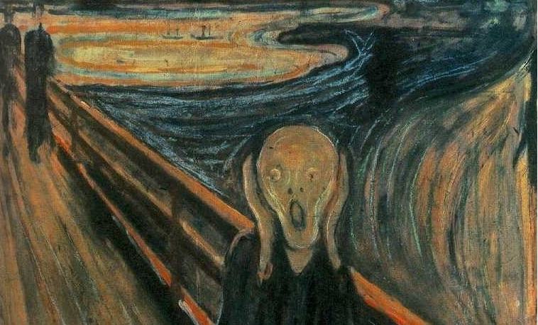

Иван написал(а):
Смену истории и характера персонажа
Она была настолько увлекательна,что я ничего о ней не запомнил из ванилы,не напомнишь,что там ей присуще?

7 дней лета |
Вы здесь » 7 дней лета » Общее обсуждение мода » Сюжеты, понравившиеся вам больше всего
| Что наиболее удалось? | ||
| Прологи - Дрищ, Герк, Локи | 12% - 37 | |
| День 1 - Альтернативный | 3% - 11 | |
| Общий рут - первые 3 дня | 5% - 17 | |
| Рут Лены-7дл | 10% - 30 | |
| Рут Мику-DJ | 20% - 58 | |
| Рут Алисы-7дл | 10% - 29 | |
| Рут Славяны-классик | 18% - 54 | |
| Сюжет в целом | 18% - 52 | |
| Голосов: 288 | ||

Смену истории и характера персонажа
Она была настолько увлекательна,что я ничего о ней не запомнил из ванилы,не напомнишь,что там ей присуще?
Про "характер" понравилось. Спасибо.
Зачем же так сразу,я его подготавливаю xD
И большая семья(Смотрим Рут Ульяны)
Я только помню интересную историю про dead space

И большая семья(Смотрим Рут Ульяны)
Утро дня №6 - рассказ про "бааааальшую семью" за завтраком от Слави. Где ж переиначивание, по Вашему?
Утро дня №6 - рассказ про "бааааальшую семью" за завтраком от Слави. Где ж переиначивание, по Вашему?
3 день кабинет начальника Славка на диктафон рассказывает про свою большую семью
Отредактировано enzage (2016-01-28 14:44:18)

мод очень силен в сравнении с ванилой вообще небо и земля.как сравнивать например творчество группы Ария и группу Бездна анального угнетения:)БЛ оно конечно тоже цепляет но как то так по детски что ли.как будто бы автор сценария был бы сам в возрасте 17 лет когда писал.а 7ДЛ явно пишется с позиции взрослого человека,прожженного такого цыника.и вот те шаги что делает Семен в БЛ они так скажем не являются великим свершением.а вот в 7ДЛ это да действительно борьба с собой.
Лично я для себя быстро раскусил причину почему игра меня зацепила.Она очень похожа на старую фантастику конца прошлого века,где в отличии от фантастики современной всегда была некоторая недосказанность.Живым примером тому является фильм Чужой(только первая часть все остальные части это уже делали лиш бы бабла на тренде поднять). Так вот там так до конца фильма и не была расскрыта тайна появления корабля чужих.И ниче людям понравилось.И как же жалко потом выглядели всевозможные продолжения.Протей это вообще кошмар...Иногда история так и должна оставатся недосказанной,нераскрытой до конца,незаконченной,да бы читатель,зритель,игрок сами бы додумали конец истории.Стали сопоставлять факты,произвели бы самокопание и попытались поставить себя в историю что бы ощутить всю фелегранность показанных или рассказанных чувств.А не тупо посматрели кинцо или прочитали книгу и все забыли через пару дней.Пока их держит интрига они будут помнить историю.К сожалению современная фантастика это как голивудские фильмы посмотрел(поиграл,прочел)и забыл через пару дней.А тут даже проидя все до конца всегда будеш думать "а ведь могли же быть еще варианты?ведь мог Семен поступить и вообще по другому".Именно в этом и есть изюминка игры которая не отпускает и постоянно заставляет думать о себе.
Мне даже в какой то мере страшно что когда история все таки закончится то весь этот шарм пропадет.Но однозначно что БЛ что7ДЛ оставят в дуще и памяти самые лучшие воспоминания:)
ведь мог Семен поступить и вообще по другому".
Учитывая все особенности истории,выглядит это очень актуально xD
Стали сопоставлять факты
Вот именно,чтобы ты мог выстроить логическую цепочку из фактов,а не строить "свой" Совенок.Только так.

wertuxay, вот ты человек не глупый - вещи пишешь интересные, а самое главное аргументированные. Но правда, пока читал, плакал кровавыми слезами. Пожалуйста, подтяни орфографию.
И вообще да ты прав. Когда я читал оригинальный БЛ был в неописуемом восторге от сюжета. Не от девочек, а то лагеря со своими загадками. А потом этот "финальный" рут, который отвечает на все вопросы. Прочитал я его и проплевался. Без него было бы лучше. Из подобного, где финал истории был хуже интриги загадок, которые были на протяжении сюжета, вспоминается LOST. Думаю, в конце все задавались вопросом "что за х...?". Но есть же и удачные завершения. Агата Кристи, Конан Дойль. Читаешь, и предвкушаешь интересную развязку. Будем надеяться, Автора можно будет поставить в один ряд с этими личностями, он не подведет.
Да поздновато уже становится грамотным когда ты военный и до пенсии пара лет:)
В автора я тоже верю.И правильно он делает что не смотрит на мнение других.Я сам учавствовал в создании мода,правда совсем к другой игре и вообще не на такую тему но не суть,так там у нас был лидер-автор всех нововведений в игру,и он вообще категорично относился к своей команде мододелов,хотите помогать,либо оценивайте либо пилите техническую часть.но всё по его строгому сценарию,а потом вышла бета версия наших трудов,и фанаты нас завалили предложениями и просьбами...и всё.мы просто завалили мод...из отличного,качественного продукта мы сделали шлак...нариализововали такой херни...которую просили всякого рода ценители прекрасного...что наш лидер бросил разработку...и в конце концов,можете верить или нет,он пропал в луганске,жил он там,вот после подобного не шибко хочется слушать чужие мнения,а мод так и не вышел и остался в бетте.Так что удачи автору,его видение сюжета это только его,и руки проч;)хотя там уже и без продолжения примерно понятно чем коньчится дело:)Но опять же у каждого своё мнение.
В автора я тоже верю.И правильно он делает что не смотрит на мнение других.
Есть некоторые личности, которые с этим бы поспорили xD У нас по этому поводу всегда в баре жарко.
который отвечает на все вопросы.
Да,весь мой хайп убило,я ничего не получил в итоге
Да поздновато уже становится грамотным когда ты военный и до пенсии пара лет:)
Это ничего,если есть взаимопонимание, то остальное и неважно,для этого и нужен язык,то же касается и правописания.

Доброго дня. Я вот только что из стима.
Завершил рут Алисы, завершил рут Лены.
Что понравилось.
1. Отличные, живые герои. Каждая девушка вызывает интерес, по крайне мере просто хочется узнать её лучше. Та же Мику или Ульяна (хотя она и в оригинале была не плоха), которые были почти не интересны в оригинале, здесь вырисовываются полноценными личностями. Та-же Славя, бывшая в оригинале неким идеалом, теперь воспринимается как просто хорошая, но живая девушка.
2. Интересные выборы которые действительно на что-то влияют. Я например очень порадовался, когда оказался дежурным в столовой и увидел происходящее с другой стороны или, например когда на 6-й день пошел дождь, но я был в лагере.
3. Ну и что более важно, не смотря на ту-же хронологию, больше событий в одном дне, что позволяет чуть более плавно раскрывать персонажей.
Что не понравилось.
1. Графомания. Текста много, больше чем в оригинале. Это не то чтобы минус, но во-первых - иногда диалоги превращаются в монологи. Мне например врезалась в память отповедь Семена, когда Двачевская говорит ему о дружбе (2-й или 3-й день, веранда муз кружка), ну очень уж много он вывалил, как будто речь готовил. Где-то ещё была пара таких моментов. Во-вторых - иногда этот текст не нужен, он ничего не несет. Ладно бы это были диалоги, так иногда это внутренние монологи. Я прекрасно понимаю на сколько это тяжелая работа и как сложно превратить страницу текста в пол страницы или даже в треть. Но лучшее враг хорошего.
2. Out of character или скорее авторское видение персонажей. Но это уже чистая вкусовщина.
Подробнее:
Алиса
Алиса из слегка неуверенной, импульсивной цундере, с парой тараканов превратилась в девочку-проблему, девочку-катастрофу. В оригинале, её язвительность и заносчивость достаточно быстро отступают показывая внутренюю мягкость и неуверенность. Там это показывается через смену поведения в катакомбах, где она откровенно боится и жмется к Семену. Здесь этого нет, Алиса по прежнему заносчива и язвительна напоказ, в плане того как она носит свою маску, она теперь напоминает оригинальную Лену (сильно срослась). Но теперь её внутренее, это не столько неуверенность, это обида и боль (что органично, при том, что автор сделал её сиротой). Рут отличный, интересный. Более того, я сам всегда считал, что недостатки в персонажах важнее чем достоинства. Но уровень церебрального секса, который она вываливает на Семена поражает, я в какой-то момент перестал понимать чем эта язва так могла зацепить героя. Или это на уровне некой "внутренней химии"? Но тогда я пропустил это в тексте.
Если говорить о конкретно этом персонаже - в оригинале он зацепил меня сразу, вызвав срабатывание внутреннего радара. А когда узнал, что эта горячая женщина ещё и на гитаре лабает, вообще лишился шансов к отступлению.
Здесь - желание узнать Алису поближе вызывает только эпизод на сцене. Второй раз, что-то похожее дает сцена после побега Ульяны, но это скорее удивление "ну надо-же, печется о ком-то".
Лена
Когда начал проходить этот рут, подумал что автор симпатизирует Лене. После всей боли и хаоса который на меня вывалила 2Ч, с Леной всё шло очень легко и непринужденно. Выборы - достаточно очевидны и понятны. Немного удивила скорость развития событий (это я о поцелуе на 2-й или 3-й день), хотя и порадовала конечно. Очень зацепил её монолог когда она говорит "Выбираешь только те варианты которые нравятся". Вот тут действительно пробирает и начинаешь думать, что эта девочка видит глубже, чем ты хочешь показать. Почти что слом 4-й стены.
Что не порадовало.
Провисания в середине историии.
Реально интересны завязка и финал, большую часть времени между ними, Лена просто находится рядом с Семеном и рассказывает о чувствах, во многом повторяя уже сказанное.
С той же Алисой, есть множество выборов, пока мы готовимся к концерту и движемся к последней дискотеке, они скрашивают историю и оживляют её. Семен размышляет о том, нужен ли ему такой гемор в виде 2Ч итд. Лена, в отличии от 2Ч не отстраняется от героя, наоборот, она открывается ему, сразу, полностью, но в ответ (как я воспринимаю) ждет того-же, полного раскрытия и растворения друг в друге. И тут отлично бы смотрелись решения Смена, шаги которые на встречу ему могу бы делать игрок, а не автор. Потому, что автор, от лица Семена делает это очень уж легко и непринужденно. А так, одни сомнения Семена (мои ли это чувства или я просто отражаю в ответ) много бы стоили.
Завязка хороша - своей неожиданностью, тем как Лена сразу раскрывается герою. Проблема в том, что ей дальше почти (совместная ночевка) некуда раскрываться (до самого финала), она остается с героем и мы видим только одну Лену, а эпизод в библиотеке ("Не твоё! Собачье! Дело!") просто небольшой штришок. В оригинале, как раз эти её переход между маской (холодной, спокойной, застенчивой) и натурой (страстной, откровенной, напористой) создают большую часть интереса к персонажу, заставляя гадать какая из этих Лен настоящяя. Ну и некотрая нестабильность эмоций нависает как дамоклов меч.
Финал - выбивает почву под ногами и если в оригинале что-то можно было предположить, тут это является полной неожиданностью. Я думал, что каким-то чудом вырулил на плохую концовку. Собственно как и должно быть - одна из сильных частей истории.
Единственное чего хотелось, при уходе Лены, искать её, как это происходит обычны (через карту), а не просто плыть по течению автора.
Крайне не понравился эпизод на косе и Слави с её заметкой в газете. Ей богу, ад какой-то. Я понимаю, что это вроде как Леной подстроено, но сама ситуация выглядит несколько диковато.
Кстати, в этой ветке Семен - настоящий эмо-кид. Вечно мрачный, груженный и на всех обиженный. Это магия Леночки или дело в том, что я проходил её рут Локи (рут Алисы был пройден Герком)?
В целом:
Очень и очень достойный мод. Пожалуйста продолжайте работать над ним, с большим удовольствием буду следить за развитием.
P.S.
Тут какое-то ограничение на количество символов? Когда попытался запостить всё разом - получил ошибку.
Ответ тов. DreamTwister
Лена
Рут самый ранний - первый из вышедших. Скилл письма копился постепенно.
Слави с её заметкой в газете
Вы ещё ранние версии поведения Слави в руте Лены не видели. Только спустя какое-то время было решено сделать Славю, не машушей кулаками в этом руте и не пытающейся в качестве проверки залезть Семёну в штаны.
Алиса
Если рассуждать о её характере, что не раз происходило на форуме, то даже мсье Чесс, как самый заклятый Алисофаг, признавал, что в отношениях с ней нужен период "приручения строптивой".
В оригинальном БЛ мы видим только маленькую сцену завязки отношений, здесь же - попытку развития отношений с видимыми подводными камнями.
Отредактировано Dantiras (2016-02-24 23:15:23)
Алиса
Если рассуждать о её характере, что не раз происходило на форуме, то даже мсье Чесс, как самый заклятый Алисофаг, признавал, что в отношениях с ней нужен период "приручения строптивой".
В оригинальном БЛ мы видим только маленькую сцену завязки отношений, здесь же - попытку развития отношений с видимыми подводными камнями.
Так я не спорю, проблемы с этой девушкой ожидаемы. Не просто притирка и первое недоверие, а именно проблемы.
Но блин, она хоть как-то подпускает к себе и перестает давить желчь день эдак на 6-й.
Хотя, если подумать, в оригинале есть во первых неординарные события которые сближают героев (совместный поход по катакомбам), во вторых сам взгляд на происходящее не столь подробен. Немного театрален может быть, когда герой за одну сену соблазняет двоих дам.
А если с точки зрения здравого смысла, то, то что Алиса (какая она тут есть) уже за 6 дней его так близко подпустила - само по себе огромный прогресс.
Вы ещё ранние версии поведения Слави в руте Лены не видели. Только спустя какое-то время было решено сделать Славю, не машушей кулаками в этом руте и не пытающейся в качестве проверки залезть Семёну в штаны.
Так а зачем тут Слави? У меня Алиса напрашивается. Во первых близкая подруга, во вторых ей легче было бы такое сыграть. Готова же она была всем сказать, что Семен её лапал, ну по крайне мере Семен готов был в это поверить и допускал, что поверят другие. Или автор, от лица Лены не доверил бы такое Алисе из опасения "А вдруг для него это будет слишком"?
Отредактировано DreamTwister (2016-02-25 00:45:59)
от лица Лены не доверил бы такое Алисе из опасения "А вдруг для него это будет слишком"?
Никто не знает об истинных мотивах Слави и о космологии 7ДЛ-"Совёнка" (с). Почитайте рут Слави-Классик на её инт-концовку (ТруЪ) - запутаетесь ещё больше, но категоричности суждения об этом поубавится.
Пока этот рут (из уже готовых) больше всего по задумке заточен под ОТВЕТЫ.
Отредактировано Dantiras (2016-02-25 05:02:12)
Почитайте рут Слави-Классик на её инт-концовку (ТруЪ)
Где читать, я в файлы не лажу?
Сейчас как раз иду на концовку со Слави, как понять что она инт?)
Сейчас как раз иду на концовку со Слави, как понять что она инт?)
Инт-концовка даётся только при повторном прохождении при получении гуда.
Вы ещё ранние версии поведения Слави в руте Лены не видели. Только спустя какое-то время было решено сделать Славю, не машушей кулаками в этом руте и не пытающейся в качестве проверки залезть Семёну в штаны.
Хм, а для археологов такая версия где-то есть? Любопытно посмотреть. Да и "лазанье в штаны" как-то убедительней выглядит в качестве проверки. 
Инт-концовка даётся только при повторном прохождении при получении гуда.
Гуда за неё или гуда вообще?
А то тут и в пещере мистицизм какой-то и физрука вон как-то хитро...
Сплошной Твин-пикс, скоро черный вигвам пойдем искать.
Отредактировано DreamTwister (2016-02-25 14:31:37)
Гуда за неё или гуда вообще?
Конечно за неё.
У Слави 10 концовок (или 11 - точно не помню), в т.ч. два обычных гуда.
У Слави 10 концовок (или 11 - точно не помню), в т.ч. два обычных гуда.
У меня нет столько времени.

Но здесь конечно Славя неимоверно радует, значительно живее оригинала.
Я призываю тов. Арли с комментарием по поводу некоторых тезисов.
И пока Вы совершенно никаких ОТВЕТОВ не получили. Добывайте инт-ветку.
Отредактировано Dantiras (2016-02-25 17:22:46)

Она была настолько увлекательна,что я ничего о ней не запомнил из ванилы,не напомнишь,что там ей присуще?
Добро ради добра ей присуще. Характер Слави, ее индивидуальность по сути вообще никак не описываются.

Добро ради добра ей присуще. Характер Слави, ее индивидуальность по сути вообще никак не описываются.
Альтруистов в природе не существует, тащ, все преследуют свои цели. Славя оригинала утопична, как творение Томаса Мура, её не бывает и быть не может. Правда, некоторые камрады возражают, не спорю.

7дл Алисорут - лучший из всех.
Хотя о чем я, я ради Алисы и пришел в 7дл, так что мнение сугубо субьективное.
Впрочем, он и правда очень хорош, не накручен излишне, читается легко и повествует о вполне приземленных и понятных вещах, и сама Алиса получилась живой и "настоящей"
Жиза прежиза, в общем, мне доставил больше всех.

Рут Лены. Хоть я еще и не определился какой персонаж мне больше всего нравится,но этот рут зацепил меня до глубины души 
Я решил сначала добить все руты оригинального сценария (да-да, я ньюфажик немного), а потом полностью пройти ваш мод 
Ах да, этот внутренний голос просто топовый! С ним игра (ИМХО) становится намного увлекательней
Вы здесь » 7 дней лета » Общее обсуждение мода » Сюжеты, понравившиеся вам больше всего